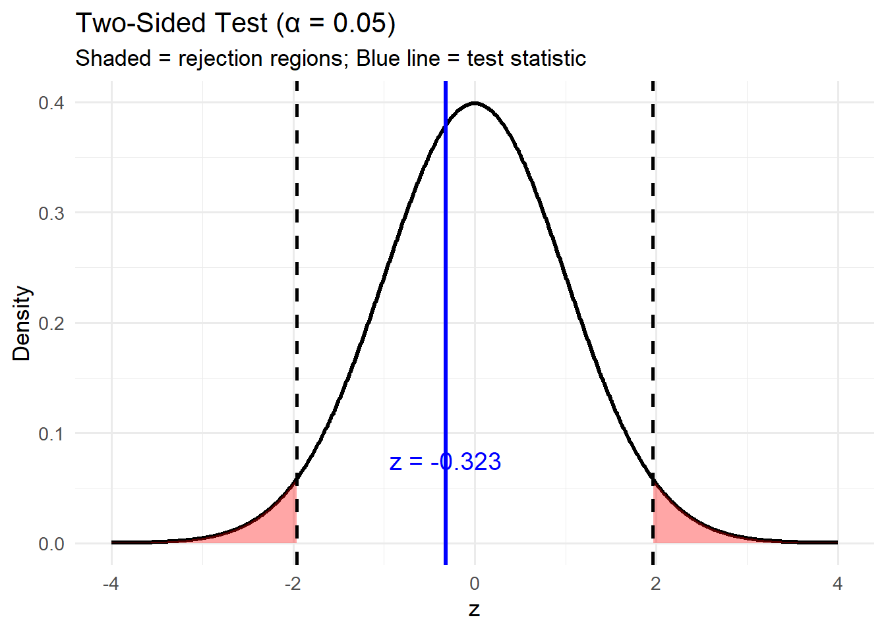
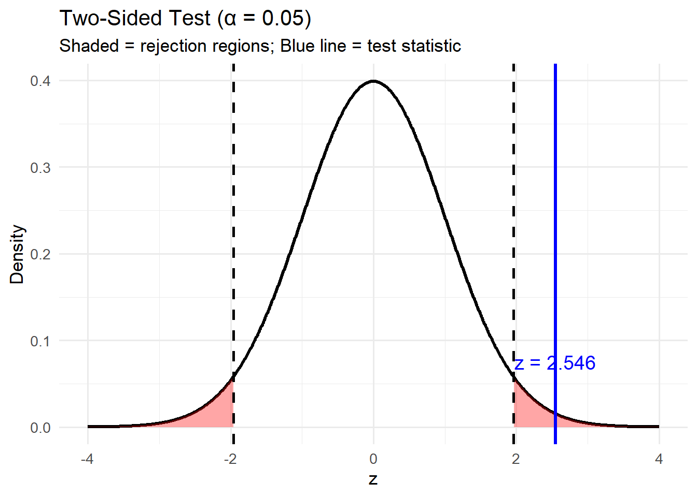
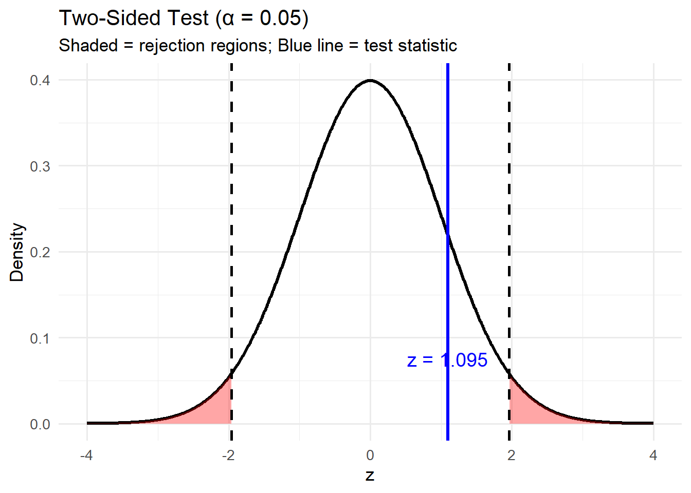

Lesson 14: Confidence Interval (Categorical)
Lesson Administration
Calendar
Day 1
Day 2

Exploration Exercise 2.3
- ⏰ Due 0700 ET on Lesson 15
- Lets take a look at it
Milestone 4
- Lesson 17
- Milestone 4
- With partner
- Write 1-2 paragraphs per article summarizing the articles topic with a take away for its insight on your project.
- Make updates from Milestone 3 feedback.
- Fill out Annex B for my comments on Milestone 3.
- Turn in EVERYTHING in your working write up.
- Keep your binder up-to-date, but I don’t want to see it.
Cal
Review: \(z\)-Tests for One Proportion
For all cases:
\[ z = \frac{\hat{p} - \pi_0}{\sqrt{\frac{\pi_0 (1 - \pi_0)}{n}}} \]
| Alternative Hypothesis | Formula for \(p\)-value | R Code |
|---|---|---|
| \(H_A: p > \pi_0\) | \(p = 1 - \Phi(z)\) | p_val <- 1 - pnorm(z_stat) |
| \(H_A: p < \pi_0\) | \(p = \Phi(z)\) | p_val <- pnorm(z_stat) |
| \(H_A: p \neq \pi_0\) | \(p = 2 \cdot (1 - \Phi(|z|))\) | p_val <- 2 * (1 - pnorm(abs(z_stat))) |
Where:
- \(\hat{p} = R/n\) (sample proportion)
- \(\pi_0\) = hypothesized proportion under \(H_0\)
- \(\Phi(\cdot)\) = cumulative distribution function (CDF) of the standard normal distribution.
Review: \(t\)-Tests for One Mean
For all cases:
\[ t = \frac{\bar{x} - \mu_0}{s / \sqrt{n}} \]
| Alternative Hypothesis | Formula for \(p\)-value | R Code |
|---|---|---|
| \(H_A: \mu > \mu_0\) | \(p = 1 - F_{t_{df}}(t)\) | p_val <- 1 - pt(t_stat, df) |
| \(H_A: \mu < \mu_0\) | \(p = F_{t_{df}}(t)\) | p_val <- pt(t_stat, df) |
| \(H_A: \mu \neq \mu_0\) | \(p = 2 \cdot (1 - F_{t_{df}}(|t|))\) | p_val <- 2 * (1 - pt(abs(t_stat), df)) |
Where:
- \(\bar{x}\) = sample mean
- \(\mu_0\) = hypothesized mean under \(H_0\)
- \(s\) = sample standard deviation
- \(n\) = sample size
- \(df = n - 1\) = degrees of freedom
- \(F_{t_{df}}(\cdot)\) = cumulative distribution function (CDF) of the Student’s \(t\) distribution with \(df\) degrees of freedom
Interpreting the \(p\)-value
Rejecting \(H_0\)
> Since the \(p\)-value is less than \(\alpha\) (e.g., \(0.05\)), we reject the null hypothesis.
> We conclude that there is sufficient evidence to suggest that [state the alternative claim in context].Failing to Reject \(H_0\)
> Since the \(p\)-value is greater than \(\alpha\) (e.g., \(0.05\)), we fail to reject the null hypothesis.
> We conclude that there is not sufficient evidence to suggest that [state the alternative claim in context].
Other Notes
What impacts does altering different values have?
- Generalization: We can generalize results to a larger population if the sample is random and representative of that population. Convenience samples don’t justify broad claims.
- Causation: We can claim causation only if the study design is a randomized experiment. Observational studies can show associations, but not cause-and-effect.
Confidence Intervals on Proportions
Suppose we take a random sample of \(n = 1000\) people, and \(x = 120\) of them are left-handed.
That means our sample proportion is
\[ \hat{p} = \frac{120}{1000} = 0.12. \]
Now we ask: what are reasonable values for the true proportion of left-handed people in the population?
We could also ask that question in this way: Where, under a two-sided (\(\neq\)) alternative hypothesis, would we reject?
We start with the one-proportion \(z\) statistic:
\[ z \;=\; \frac{\hat{p} - \pi_0}{\sqrt{\dfrac{\pi_0(1-\pi_0)}{n}}}. \]
At significance level \(\alpha = 0.05\), we reject \(H_0\) whenever \(z\) falls into the rejection region (the critical tail(s)).
Where on this plot would we reject?
Where are these lines?

So, the left tail contains \(0.025\) of the distribution, and the right tail contains \(0.025\).
How do we find where \(0.025\) of the distribution is on each side?
We want to solve: \[ 0.025 \;=\; \int_{-\infty}^{x} \frac{1}{\sqrt{2\pi}} e^{-z^{2}/2}\,dz. \]
When we solve for \(x\), this is the quantile function (inverse CDF).
This is a difficult distribution to solve for \(x\) by hand — that’s why we have R.
qnorm(0.025, mean = 0, sd = 1)[1] -1.959964That’s the left cutoff. And the right cutoff:
qnorm(0.975, mean = 0, sd = 1)[1] 1.959964So our critical values are about \(-1.96\) and \(+1.96\).
That is, \[ \pm 1.96 \;=\; \frac{\hat{p} - \pi_0}{\sqrt{\dfrac{\pi_0(1-\pi_0)}{n}}}. \]
We don’t know the true \(p\), and there isn’t a \(\pi_0\) to plug in.
So what do we do? We use the best estimate of \(p\) we have: the sample proportion \(\hat{p}\).
That gives us \[ \pm 1.96 \;=\; \frac{\hat{p} - \pi_0}{\sqrt{\dfrac{\hat{p}(1-\hat{p})}{n}}}. \]
With a little algebra: \[ \begin{align*} \hat{p} - \pi_0 \;&=\; \pm 1.96 \sqrt{\dfrac{\hat{p}(1-\hat{p})}{n}} \\[6pt] -\pi_0 \;&=\; -\hat{p} \;\pm\; 1.96 \sqrt{\dfrac{\hat{p}(1-\hat{p})}{n}} \\[6pt] \pi_0 \;&=\; \hat{p} \;\pm\; 1.96 \sqrt{\dfrac{\hat{p}(1-\hat{p})}{n}} \end{align*} \]
So the general 95% confidence interval for a proportion is: \[ \hat{p} \;\pm\; 1.96 \sqrt{\dfrac{\hat{p}(1-\hat{p})}{n}} \]
(Equivalently: the set of \(\pi_0\) values we would not reject at \(\alpha=0.05\).)
Back to our \(120/1000\) lefties:
\[ \frac{3}{25} \;\pm\; 1.96 \sqrt{\dfrac{\frac{3}{25}(1-\frac{3}{25})}{1000}} \] Which is \(0.12±0.0201\)
Practice Problem
A random sample of 220 cadets was asked if they drink coffee at least once a day. Out of those surveyed, 76 cadets said yes.
Tasks
- State the parameter of interest \(\pi\) in words.
- Compute the sample proportion \(\hat{p}\).
- Construct a 95% confidence interval for \(p\).
- Interpret the interval in context of the cadet population.
- (Extension) How would the width of the interval change if the sample size were doubled but the proportion stayed about the same?
Task 1. Parameter of interest
Let \(\pi\) be the true proportion of all cadets who drink coffee at least once a day.
Task 2. Sample proportion
\[ \hat{p} = \frac{x}{n} = \frac{76}{220} = \frac{19}{55} \approx 0.3455 \]
So \(\hat{p} \approx 0.3455\), about 34.6%.
Task 4. 95% Confidence Interval for \(p\)
General formula:
\[ \hat{p} \;\pm\; z^\star \sqrt{\tfrac{\hat{p}(1-\hat{p})}{n}}, \quad z^\star \approx 1.96 \text{ for 95\%} \]
Plugging in values:
\[ 0.3455 \;\pm\; 1.96 \sqrt{\tfrac{0.3455(1-0.3455)}{220}} \]
Compute:
\[ 0.3455 \;\pm\; 1.96 \times 0.0321 \]
Confidence interval:
\[ [\,0.2827,\;0.4083\,] \]
So the 95% CI is approximately \([0.283,\;0.408]\).
Task 5. Interpretation
We are 95% confident that the true proportion \(p\) of cadets who drink coffee at least once a day lies between 28.3% and 40.8%.
Task 6. What if the sample size doubled?
If \(n\) doubles to 440 (with \(\hat{p}\) about the same), the confidence interval becomes
\[ 0.3455 \;\pm\; 1.96 \sqrt{\tfrac{0.3455(1-0.3455)}{440}} \]
Compute:
\[ 0.3455 \;\pm\; 1.96 \times 0.0227 \]
New confidence interval:
\[ [\,0.301,\;0.390\,] \]
So with a larger sample size, the interval is narrower.
Board Problems
Board Problem 1
A random sample of 160 cadets was asked if they own a smartwatch. Out of those surveyed, 62 said yes. Suppose previous reports suggested that 40% of cadets own a smartwatch.
- State the null and alternative hypotheses.
- Test the hypotheses at \(\alpha = 0.05\).
- Construct a 95% confidence interval for the true proportion of cadets who own a smartwatch.
Solution
Null and alternative:
\[
H_0: p = 0.40, \quad H_A: p \neq 0.40
\]
Test:
\[
\hat{p} = \tfrac{62}{160} = 0.3875
\]
\[ z = \frac{\hat{p} - 0.40}{\sqrt{\tfrac{0.40(1-0.40)}{160}}} = \frac{0.3875 - 0.40}{\sqrt{\tfrac{0.24}{160}}} \approx -0.323 \]
\[ p = 2\bigl(1 - \Phi(|z|)\bigr) \approx 0.747 \]
Decision at \(\alpha = 0.05\): Fail to reject \(H_0\).
95% CI:
\[
0.3875 \;\pm\; 1.96 \sqrt{\tfrac{0.3875(1-0.3875)}{160}}
= [\,0.312,\;0.463\,]
\]

Board Problem 2
In a survey of 200 soldiers, 118 said they prefer running over cycling for cardio workouts. If there is no preference, we would expect half of soldiers to choose running.
- State the null and alternative hypotheses.
- Test the hypotheses at \(\alpha = 0.05\).
- Construct a 95% confidence interval for the true proportion who prefer running.
Solution
Null and alternative:
\[
H_0: p = 0.50, \quad H_A: p \neq 0.50
\]
Test:
\[
\hat{p} = \tfrac{118}{200} = 0.59
\]
\[ z = \frac{0.59 - 0.50}{\sqrt{\tfrac{0.50(1-0.50)}{200}}} = \frac{0.09}{\sqrt{\tfrac{0.25}{200}}} \approx 2.546 \]
\[ p = 2\bigl(1 - \Phi(|z|)\bigr) \approx 0.011 \]
Decision at \(\alpha = 0.05\): Reject \(H_0\).
95% CI:
\[
0.59 \;\pm\; 1.96 \sqrt{\tfrac{0.59(1-0.59)}{200}}
= [\,0.522,\;0.658\,]
\]

Board Problem 3
A random sample of 90 cadets was taken, and 27 reported they drink an energy drink daily. Past studies suggested that 25% of cadets drink energy drinks daily.
- State the null and alternative hypotheses.
- Test the hypotheses at \(\alpha = 0.05\).
- Construct a 95% confidence interval for the true proportion of cadets who drink an energy drink daily.
Solution
Null and alternative:
\[
H_0: p = 0.25, \quad H_A: p \neq 0.25
\]
Test:
\[
\hat{p} = \tfrac{27}{90} = 0.30
\]
\[ z = \frac{0.30 - 0.25}{\sqrt{\tfrac{0.25(1-0.25)}{90}}} = \frac{0.05}{\sqrt{\tfrac{0.1875}{90}}} \approx 1.095 \]
\[ p = 2\bigl(1 - \Phi(|z|)\bigr) \approx 0.273 \]
Decision at \(\alpha = 0.05\): Fail to reject \(H_0\).
95% CI:
\[
0.30 \;\pm\; 1.96 \sqrt{\tfrac{0.30(1-0.30)}{90}}
= [\,0.205,\;0.395\,]
\]

Before you leave
Today:
- Any questions for me?
Upcoming Graded Events
- WPR 2: Lesson 22